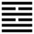

Hỏa Trạch Khuê (睽 kuí)
Gia đạo đến lúc cùng thì có người trong nhà chia lìa, chống đối nhau, cho nên sau quẻ Gia nhân tới quẻ Khuê. Khuê nghĩa là chống đối, chia lìa.
Thoán từ:
睽．小事吉．
Khuê: Tiểu sự cát.
Dịch: Chống đối: việc nhỏ thì tốt.
Giảng: đoài (chằm) ở dưới Ly (lửa). chằm có tính thấm xuống, lửa có tính bốc lên, trên dưới không thông với nhau mà càng ngày càng cách xa nhau.
Quẻ này xấu nhất trong Kinh dịch, ngược hẳn lại với quẻ Cách. Chỉ làm những việc nhỏ cá nhân thì hoạ may được tốt.
Thoán truyện giảng thêm: Đoài là thiếu nữ, Ly là trung nữ, hai chị em ở một nhà mà xu hướng trái nhau (em hướng về cha mẹ, chị hướng về chồng), chí hướng khác nhau, cho nên gọi là khuê.
Tuy nhiên Ðoài có đức vui, Ly có đức sáng, thế là hòa vui mà nương tựa vào đức sáng. Lại thêm hào 5, âm nhu mà tiến lên ở ngôi cao, đắc trung mà thuận ứng với hào 2, dương dương ở dưới, cho nên bảo việc nhỏ thì tốt.
Xét trong vũ trụ, trời đất, một ở trên cao, một ở dưới thấp, vốn là khác nhau, chia lìa nhau, vậy mà công hoá dục vạn vật là của chung trời đất. Trai gái, một dương, một âm, vẫn là trái nhau, vậy mà cảm thông với nhau. Vạn vật tuy khác nhau mà việc sinh hào cùng theo một luật như nhau. Thế là trong chỗ trái nhau vẫn có chỗ giống nhau, tìm ra được chỗ “đồng” đó trong cái “dị”, là biết được cái diệu dụng (công dụng kỳ diệu) của quẻ Khuê, của thời Khuê.
Thoán truyện khuyên ta như vậy. Đại tượng truyện ngược lại khuyên ta ở trong chỗ “đồng” có khi nên “dị”. Ví dụ người quân tử bình thường hành động cũng hợp thiên lý, thuận nhân tình như mọi người (đó là đồng); nhưng gặp thời loạn, đại chúng làm những việc trái với thiên lý thì không ùa theo họ, mà tách riêng ra, cứ giữ thiên lý, dù bị chê bai, bị gian khổ cũng chịu (đó là dị). Vậy không nhất định là phải đồng mới tốt, dị (chia lìa) cũng có lúc tốt.
Ý nghĩa các hào :”
1.
初九: 悔亡, 喪馬, 勿逐, 自復. 見惡人．无咎．
Sơ cửu: Hối vong, táng mã, vật trục, tự phục kiến ác nhân, vô cữu.
Dịch: Hào 1, dương: hối hận tiêu hết; mất ngựa đừng tìm đuổi, tự nó sẽ về: gặp kẻ ác rồi mới tránh được lỗi.
Giảng: Hào này có tính cương, ở địa vị dưới, trong thời chống đối nhau, thì tất ít kẻ hợp với mình, hành động thì sẽ bị hối hận; nhưng may ở trên có hào 4 cũng dương cương, ứng với mình, tức như có bạn đồng chí, cứ chờ đợi rồi sẽ gặp mà bao nhiêu khó khăn, ân hận sẽ tiêu hết. đối với kẻ ác thì tuy không ưa cũng đừng nên tỏ ra, cứ làm bộ vui vẻ giao thiệp họ, để họ khỏi thù oán.
2.
九二: 遇主于巷, 无咎．
Cửu nhị: Ngộ chủ vu hạng, vô cữu.
Dịch: Hào 2, dương: gặp chủ trong ngõ hẹp (do đường tắt) không có lỗi.
Giảng: Hào này dương cương đắc trung, ứng với hào 5, âm nhu đắc trung, nếu ở trong quẻ Thái (thời thông thuận) thì rất tốt; nhưng ở trong quẻ Khuê (thời chống đối nhau) thì kém vì hào 5 âm nhu có ý kiêng nể hào 2 dương cương, do đó, 2 muốn gặp 5 thì phải dùng đường tắt, rình 5 trong ngõ hẹp như tình cờ gặp nhau vậy. Không có lỗi gì cả, vì thái độ đó chỉ là quyền biến thôi.
3.
六三: 見輿曳, 其牛掣; 其人天且劓．无初有終．
Lục tam: Kiến dư duệ, kì ngưu xệ (hay xiệt);
Kì nhân thiên thả nghị, vô sơ hữu chung.
Dịch: Hảo, âm: Thấy xe dắt tới, nhưng con bò bị (hào 4) cản, không tiến được; như người bị xâm vào mặt, xẻo mũi, mới đầu cách trở, sau hòa hợp với nhau.
Giảng: Hào 3 bất chính (dương mà ở vị âm), ứng với hào trên cùng cũng bất chính. Vì ứng với nhau nên cầu hợp với nhau, 3 muốn tiến lên gặp hào ứng với nó, nhưng bị hào 4 ở trên ngăn chặn, như cỗ xe đã dắt tới rồi mà con bò bị cản, không tiến được. Lại thêm bị hào 2 ở dưới níu kéo lại. Hào 3 phải chống lại 4 và 2, xô xát với chúng mà bị thương ở mặt ở tai (chữ thiên [天 ] ở đây có nghĩa là bị tội xâm vào mặt, chữ nghị [劓] có nghĩa là bị tội xẻo mũi). Nhưng rốt cuộc là (2 và 4) vẫn không thắng được chính (3) và 3 vẫn hòa hợp được với hào trên cùng.
4.
九四: 睽孤, 遇元夫, 交孚, 厲无咎．
Cửu tứ: Khuê cô, ngộ nguyên phu, giao phu, lệ vô cữu.
Dịch: Hào 4, dương: ở thời chia lìa chống đối mà cô lập; nếu gặp được người trai tốt (nguyên phu), mà chí thành kết hợp với nhau (giao phu) thì dù có gặp nguy, kết quả cũng không có lỗi.
Giảng: hào 4 này cô lập vì là dương mà bị hai hào âm bao vây, người trai tốt đây là hào 1, cùng đức (dương) với 4.
5.
六五: 悔亡, 厥宗噬膚, 往, 何咎．
Lục ngũ: hối vong, quyết tôn phệ phu, vãng, hà cữu.
Dịch: Hào 5 âm, hối hận tiêu hết; nếu người cùng phe với mình cắn vào da mình (hết sức giúp đỡ mình) thì tiến đi, không có lỗi gì cả.
Giảng: Hào này không đắc chính (âm mà ở vị dương), ở vào thời chống đối, đáng lẽ xấu, mà nhờ có đức trung, lại có hào 2 dương cương ứng với mình, nên không xấu nữa, hối hận tiêu tan hết. Được vậy là nhờ hào 2 chịu đứng vào một phe với mình, rất thân thiết với mình, như cắn chặt vào da mình.
6.
上九: 睽孤, 見豕負塗, 載鬼一車．先張之弧, 後說之弧, 匪寇, 婚媾．往遇雨則吉．
Thượng cửu: Khuê cô, kiến thỉ phụ đồ, tải quỉ nhất xa. Tiên trương chi hồ, hậu thoát chi hồ, phỉ khấu, hôn cấu. Vãng ngộ vũ tắc cát.
Dịch: Hào trên cùng, dương: ở thời chia lìa mà cô độc (sinh nghi kỵ), thấy con heo đội đầy bùn, thấy chở quỉ đầy một xe. Mới đầu giương cung để bắn, sau buông cung xuống, xin lỗi rằng mình không muốn làm hại hào 3 mà muốn cầu hôn. (Hai bên hòa hợp nhau, vui vẻ) như sau khi nắng lên, gặp cơn mưa, tốt lành gì hơn?
Giảng: Ở vào thời chia lìa, người ta hay nghi kỵ nhau, hào cuối cùng này, dương cương ở địa vị tối cao, không tin ai ở dưới cả, cho nên bị cô độc. Ngay hào 3 âm, chính ứng với mình mà cũng bị mình nghi kỵ, vì 3 ở kẹt vào giữa 2 hào dương, cho rằng 3 theo phe 2 hào dương đó mà chống với mình. Vì nghi kỵ, nên thấy 3 như con heo đội bùn, lại tưởng xe mình chở một bầy quỉ muốn hại mình. Do đó mà đâm hoảng, giương cung muốn bắn 3, nhưng nhờ vẫn còn chút minh mẫn (vì ở trên cùng ngoại quái Ly) nên sau nghĩ lại, buông cung xuống, xin lỗi 3: “Tôi không phải là giặc (kẻ thù) muốn làm hại em đâu, mà trái lại muốn cầu hôn với em” Hết nghị kỵ rồi, hai bên hòa hợp vui vẻ như sau khi nắng lâu gặp trận mưa rào, và cùng giúp nhau cứu đời.
Văn thật là bóng bẩy, tâm lý cũng đúng: Phan Bội Châu khen là “đạo lý rất tinh thâm mà văn tự cũng ly kỳ biến hoá”.
*
Quẻ Khuê là quẻ xấu nhất trong Kinh Dịch nhưng kết quả lại không có gì xấu. Sáu hào thì có ba hào “vô cửu”, một hào “hối vong” một hào “hữu chung” (hòa hợp với nhau), nhất là hào cuối lại “cát nữa. Như vậy thì trong cái hoạ vẫn có mầm phúc.